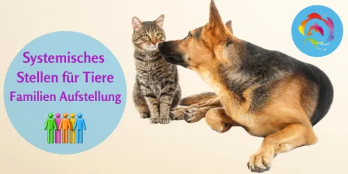
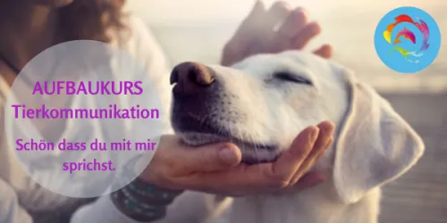

Tiere besser verstehen durch Tierkommunikation Basis Kurs
Produktprofil · Marktplatz-Daten 2026-10-14 · Verkaufsseiten-Recherche 2026-10-14 · Kategorien: Animals & Pets
- Tiere besser verstehen durch Tierkommunikation Basis Kurs ist ein/e Mitgliederbereich & Videokurs in Animals & Pets, vertrieben über den Digistore24-Marktplatz von Anbieter Andrea1A, gelistet seit 2020-04-08.
- Listenpreis $441.93 (single payment, installment) — Checkout, Auslieferung und Rückerstattungen laufen über Digistore24 selbst, nicht über den Anbieter.
- Käuferschutz: keine standardisierte Garantie-Formulierung gefunden — Rückerstattungsbedingungen vor der Zahlung auf der offiziellen Seite prüfen.
Interesse an Tiere besser verstehen durch Tierkommunikation Basis Kurs? Aktueller Preis, Boni und Garantiebedingungen finden Sie auf der offiziellen Seite des Anbieters:
Offizielle Verkaufsseite ansehen
Affiliate-Link (Werbung) — wir verdienen ggf. eine Provision, ohne Mehrkosten für Sie.

Marktplatz-Daten
| Produkttyp | Mitgliederbereich & Videokurs |
|---|---|
| Preis | $441.93 (Single payment, Installment) |
| Garantie/Rückgabe | Laut Verkaufsseite des Anbieters — vor dem Kauf auf der offiziellen Seite prüfen |
| Anbieter | Andrea1A (gelistet seit 2020-04-08) |
Marktplatz-Beschreibung des Anbieters
Schritt für Schritt die nonverbale Kommunikation mit Tieren erlernen. Online Kurs - Tierakademie Es sind KEINE Vorkenntnisse notwendig. Du kannst JEDERZEIT einsteigen. Du kannst in deinem eigenen Tempo von zu Hause aus lernen. Für wen ist der Kurs geeignet? Für jeden der mehr über die Tierkommunikation erfahren möchte oder auch sein Wissen erweitern möchte. Für jeden der seinen Traum leben möchte und mit seinem eigenen oder fremden Tieren zu kommunizieren. Mit der Tierkommunikation begleitet man Mensch und Tier bei Problemen und kann konkrete Lösungsmöglichkeiten aufzeigen um mehr Klarheit (Gesundheit) und Lebensqualität zu erreichen. Geeignet für folgende Personen/-Gruppen: Tierliebe Menschen und alle die in Tierberufen arbeiten wie z.B.: THP Hundeschulen Hundefriseure Tierpfleger Tierheim-Mitarbeiter usw.
Von der Verkaufsseite des Anbieters
Seitentitel: Der Einstieg in die Tierkommunikation
Meta-Beschreibung: #Tierakademie Basis Seminar. Tierkommunikation ist einfach! Erlerne in nur 3 Wochen die nonverbale Sprache der Tiere.
Hauptüberschrift
Tierkommunikation ist einfach!
Abschnitts-Überschriften
- Möchtest du die Sprache der Tiere verstehen?
- Die Tierkommunikation ist das Richtige für dich, wenn du wissen möchtest...
- Du möchtest endlich die Lösung zu einem Problem herausfinden...
- Diese Meditationen und Übungen warten auf dich:
- Das sagen die Teilnehmer über das Einstiegsseminar in die Tierkommunikation.
- Das Seminarprogramm in der Tierakademie 8 Module
- Deine Boni
- Lass dich von meinen Kunden und ihren Erfolgen überzeugen.
- Werdet ein eingespieltes Team ❤
- Dein Investment Starte jetzt für nur 247€ anstatt 377€ !
Einstiegstext
Liebe Andrea, ich fand diese drei Wochen echt super, man hatte genug Zeit sich alles selbst einzuteilen, am Beginn habe ich mich etwas schwergetan, aber mittlerweile habe ich ein wenig mehr Vertrauen in mich selbst, die Feedbacks, die man von allen Teilnehmern bekommt, sind toll und helfen auch weiter. Sollte es einen Aufbaukurs dazu geben, bin ich auf jeden Fall dabei. Ich finde es wunderbar, wenn man seine eigene Intuition schulen kann und mit den Tieren ins Gespräch kommt. Ein herzliches Dankeschön für diese Möglichkeit, dies online zu machen
Ganz toller Kurs! Ich finde der Kurs ist sehr verständlich und strukturiert aufgebaut, Schritt für Schritt bekommt man eine genaue Anleitung wie die Tierkommunikation abläuft und auf was man achten muss. Ich fühle mich nun viel sicherer in meinem tun und will unbedingt dran bleiben.
Lerne bequem auf dem Sofa mit deinem Vierbeiner oder nimm das Training sogar mit in den Park! So werdet ihr im Handumdrehen zum Dream-Team!
Fragen, die die Verkaufsseite beantwortet
- Für wen ist dieser Online Kurs geeignet?
Recherche-Methode: rohes HTML · 1000 Wörter · Qualität: rich · recherchiert am 2026-10-14. Vollständige Recherche-Datei (MD) ↗
Anwendung — laut Anbieter
Entdecke die Magie der Tierkommunikation. Mit unserem betreuten Online-Kurs Schritt für Schritt zur Tierkommunikation.
Ganz toller Kurs! Ich finde der Kurs ist sehr verständlich und strukturiert aufgebaut, Schritt für Schritt bekommt man eine genaue Anleitung wie die Tierkommunikation abläuft und auf was man achten muss. Ich fühle mich nun viel sicherer in meinem tun und will unbedingt dran bleiben.
Ich nehme dich Schritt für Schritt an die Hand so, dass du die Tierkommunikation von der Basis an erlernen kannst.
Weitere Bilder (von der Verkaufsseite des Anbieters)
Bilder stammen von der offiziellen Verkaufsseite des Anbieters und zeigen das Produkt, wie es beworben wird.
Gut zu wissen
- Hoher Preis: $441.93 ist eine erhebliche Ausgabe — prüfen Sie, ob es einen Zahlungsplan gibt, und vergleichen Sie zuerst die günstigeren Alternativen der Kategorie.
- Keine Garantie-Formulierung in unserer Recherche gefunden — bestätigen Sie das Rückgabefenster auf der offiziellen Seite, bevor Sie kaufen.
Was ist Tiere besser verstehen durch Tierkommunikation Basis Kurs?
Tiere besser verstehen durch Tierkommunikation Basis Kurs ist ein/e mitgliederbereich & videokurs in der Kategorie Tiere & Haustiere des Digistore24-Marktplatzes, veröffentlicht von Anbieter Andrea1A und im Verkauf seit 2020-04-08. Der Anbieter beschreibt es so: "Schritt für Schritt die nonverbale Kommunikation mit Tieren erlernen. Online Kurs - Tierakademie Es sind KEINE Vorkenntnisse notwendig. Du kannst JEDERZEIT einsteigen. Du kannst in deinem eigenen Tempo von zu Hause aus lernen. Für wen ist der Kurs geeignet? Fü" (Marktplatz-Beschreibung des Anbieters, leicht gekürzt).
Tiere besser verstehen durch Tierkommunikation Basis Kurs Preis: was Sie zahlen
Der Marktplatz listet Tiere besser verstehen durch Tierkommunikation Basis Kurs zum $441.93 Preis (single payment, installment). Digistore24 fügt im Checkout die gesetzliche Steuer Ihres Landes hinzu — dort sehen Sie den Endbetrag vor der Zahlung. Eine separate Plattformgebühr gibt es nicht; Anbieter können eigene Upsells nach dem Checkout anbieten.
Tiere besser verstehen durch Tierkommunikation Basis Kurs Rückerstattung und Geld-zurück-Garantie
Wir haben keine standardisierte Garantie-Formulierung auf der Verkaufsseite gefunden. Rückerstattungen für Digistore24-Käufe laufen über die Plattform: Antrag über den Support-Link in Ihrer Bestell-E-Mail, innerhalb des Garantiezeitfensters, das im Checkout angezeigt wird. Praktischer Rat: Entscheiden Sie innerhalb des Fensters — wenn das Produkt unter den Erwartungen bleibt, erstatten lassen statt irren lassen.
Mechanik im Detail: So funktionieren Digistore24-Rückerstattungen.
Für wen ist Tiere besser verstehen durch Tierkommunikation Basis Kurs geeignet?
Basierend auf der Tiere & Haustiere-Einordnung und der single payment, installment-Abrechnung richtet sich Tiere besser verstehen durch Tierkommunikation Basis Kurs an Käufer, die tiere & haustiere-Lösungen suchen und ein Budget für einen Premium-Kauf eingeplant haben. Der ehrliche Test ist nicht die Kategorie, sondern Ihre eigene Situation: Werden Sie es realistisch innerhalb des Garantiefensters nutzen? Wenn ja, ist der Preis eine Investition; wenn nein, ist er Ballast — unabhängig von der Qualität.
Ist Tiere besser verstehen durch Tierkommunikation Basis Kurs seriös? Was Sie vor dem Kauf prüfen
Wir bewerten keine Seriosität — das kann niemand, ohne das Produkt zu nutzen. Prüfbare Punkte, alle auf dieser Seite: die Marktplatz-Historie des Anbieters (im Verkauf seit 2020-04-08), die wörtlichen Verkaufsseiten-Auszüge unten (gekennzeichnet als Anbieteraussagen — deren Werbung, nicht unsere Empfehlung), die Garantiebedingungen im Checkout und die Auslieferungsart. Vorsichtsignale bei jedem Angebot: Countdown-Dringlichkeit gepaart mit vagen Rückerstattungsbedingungen, Testimonials ohne Datum und Anbieterseiten, die den Preis bis zum Checkout verstecken.
Wie kommen Sie nach dem Kauf an Tiere besser verstehen durch Tierkommunikation Basis Kurs?
Der Checkout läuft über Digistore24. Nach der Zahlung: Videokurse laufen über einen Mitgliederbereich: nach dem Checkout erhalten Sie Zugangsdaten per E-Mail und können die Lektionen in Ihrem eigenen Tempo streamen. Bewahren Sie die Bestell-E-Mail auf — sie ist Ihr Schlüssel zum/d zur mitgliederbereich & videokurs, zu Rückerstattungsanträgen und zum Digistore24-Käufersupport.
Tiere besser verstehen durch Tierkommunikation Basis Kurs Erfahrungen: so recherchieren Sie richtig
Die meisten „Erfahrungsberichte" zu Marktplatz-Produkten sind Affiliate-Inhalte — einschließlich Seiten wie dieser, die an Käufen mitverdienen. Behandeln Sie jeden Bericht (auch unseren) als Ausgangspunkt und prüfen Sie gegen Primärquellen: die Verkaufsseite des Anbieters, die Digistore24-Rückerstattungsrichtlinie und — für tiere & haustiere — unabhängige Communities außerhalb des Affiliate-Ökosystems. Auf dieser Seite sind die Verkaufsseiten-Auszüge unten wörtlich zitiert, damit Sie die Aussagen des Anbieters bewerten können, ohne wegzuklicken.
Wie Sie Tiere besser verstehen durch Tierkommunikation Basis Kurs sicher kaufen
- Öffnen Sie die offizielle Verkaufsseite und lesen Sie das vollständige Angebot.
- Bestätigen Sie Endpreis und Garantiezeitfenster auf der Digistore24-Kassenseite — sie ist bindend, kein Vergleichsportal.
- Zahlen Sie innerhalb des Digistore24-Checkouts (niemals per Überweisung oder Off-Platform-Links).
- Speichern Sie die Bestellbestätigung; notieren Sie die Rückerstattungsfrist im Kalender.
- Prüfen Sie zügig. Der Digistore24-Käufersupport hilft, wenn der Anbieter nicht reagiert.
Vollständiges Recherche-Archiv für dieses Produkt (Markdown: kompletter Marktplatz-Datensatz + wörtliche Verkaufsseiten-Auszüge): Tiere besser verstehen durch Tierkommunikation Basis Kurs — vollständiges Datenarchiv (Markdown-Datei: 32306-tiere-besser-verstehen-durch-tierkommunikation-basis-kurs.md).
- Listenpreis & Abrechnung — Quelle: offizielle Digistore24-Marktplatz-API, Stand 2026-10-14. Maßgeblich für den aktuellen Preis ist immer die Kassenseite.
- Verkaufsseiten-Zitate — Quelle: https://tierakademie.andrea-schaedel.de/lp/einstieg-in-die-tierkommunikation-2/, abgerufen 2026-10-14 (Methode: rohes HTML). Verify: offizielle Seite öffnen.
- Garantie / Rückgabe — vom Anbieter festgelegt; vor dem Kauf auf der Verkaufsseite bestätigen.
- Nicht von uns geprüft: Produktqualität, Ergebnisse, Testimonials — kein Praxistest für dieses Listing durchgeführt.
Häufige Fragen zu Tiere besser verstehen durch Tierkommunikation Basis Kurs
Antworten aus dem Marktplatz-Snapshot (2026-10-14) und der Verkaufsseiten-Recherche (2026-10-14); Anbieteraussagen sind inline gekennzeichnet.
Was ist Tiere besser verstehen durch Tierkommunikation Basis Kurs?
Tiere besser verstehen durch Tierkommunikation Basis Kurs ist ein Angebot des Typs „Mitgliederbereich & Videokurs" im Digistore24-Marktplatz, Anbieter: Andrea1A, gelistet seit 2020-04-08. Eingepflegt unter Tiere & Haustiere. Digistore24 wickelt Checkout, Lieferung und Rückgaben ab.
Wie viel kostet Tiere besser verstehen durch Tierkommunikation Basis Kurs?
Der Digistore24-Marktplatz listet es für $441.93 (single payment, installment). Preise legt der Anbieter fest und können sich ändern — der Marktplatz-Eintrag oben zeigt den Schnappschuss; die offizielle Verkaufsseite zeigt den aktuellen Preis.
Gibt es eine Geld-zurück-Garantie für Tiere besser verstehen durch Tierkommunikation Basis Kurs?
Unsere Verkaufsseiten-Recherche hat keine explizite Garantie-Formulierung gefunden. Viele Digistore24-Produkte bieten 60 Tage Geld-zurück, aber das legt jeder Anbieter selbst fest — bestätigen Sie es auf der offiziellen Verkaufsseite, bevor Sie kaufen.
Ist Tiere besser verstehen durch Tierkommunikation Basis Kurs seriös?
Wir bewerten keine Seriosität — wir veröffentlichen überprüfbare Zahlen: Anbieter Andrea1A (gelistet seit 2020-04-08), mit der vollständigen Verkaufsseiten-Recherche archiviert auf dieser Seite (Anbieteraussagen als solche gekennzeichnet). Lesen Sie unsere 6-Punkte-Bewertungsmethode und entscheiden Sie anhand der Zahlen — oder diskutieren Sie Tiere besser verstehen durch Tierkommunikation Basis Kurs auf GitHub.
Wo kann ich Tiere besser verstehen durch Tierkommunikation Basis Kurs sicher kaufen?
Nur über die offizielle Verkaufsseite, die auf dieser Seite verlinkt ist (Checkout und Rückgaben laufen über Digistore24). Prüfen Sie dort Preis und Garantie vor der Bestellung. Der Link ist ein Affiliate-Link — der Kauf unterstützt diese Website ohne Mehrkosten für Sie.
Wie erhalte ich Tiere besser verstehen durch Tierkommunikation Basis Kurs nach der Zahlung?
Der Checkout läuft über Digistore24: Nach der Zahlung erhalten Sie Ihren Zugang oder Download per E-Mail und in Ihrem Digistore24-Kundenkonto. Lieferdetails für diesen Produkttyp: Videokurse laufen über einen Mitgliederbereich: nach dem Checkout erhalten Sie Zugangsdaten per E-Mail und können die Lektionen in Ihrem eigenen Tempo streamen. Bei Problemen kann der Digistore24-Käufersupport Ihre Bestellung wiederherstellen.
Alle 50 Käuferfragen zu Tiere & Haustiere — das komplette Kategorie-FAQ.
Tiere besser verstehen durch Tierkommunikation Basis Kurs auf Reddit diskutieren
In Community-Threads vergleichen echte Käufer Erfahrungen. Wir verlinken Communities, keine einzelnen Posts — Threads verschwinden, Subreddits bleiben:
- Reddit-Suche nach „Tiere besser verstehen durch Tierkommunikation Basis Kurs" — Live-Ergebnisse, von uns nicht beeinflusst.
- Top-„Erfahrungs"-Treffer dieses Jahr — selbst nach Aktualität filtern.
Passendes auf Amazon.de
Physische Produkte und Zubehör, die häufig zusammen mit Tiere besser verstehen durch Tierkommunikation Basis Kurs gekauft werden:
- Haustierbedarf auf Amazon.de — Top-Ergebnisse, Amazon-Ranking.
- Bestseller: Haustierbedarf — live Liste von Amazon, von uns nicht kuratiert.
Werbung: Als Amazon-Partner verdient DigistorePicks DE an qualifizierten Käufen (Partner-tag adminstorede-21). Amazon setzt eigene Preise und Provisionen (niedrige einstellige Prozente — weit unter den 30–75% der Digistore24-Anbieter). Amazon ist ein Convenience-Angebot für Sachprodukte, kein Ersatz für das digitale Produkt oben.
Ähnliche Angebote in Tiere & Haustiere

BAUCH, BEINE, PO – das Trainingsprogramm für dein Freizeitpferd In nur 8 Wochen Muskulatur, Balance & Tragkraft aufbauen, für ein gesundes, motiviertes Pfer

Zertifizierter Katzenverhaltensberater / Katzencoach – Fernlehrgang der aCATemy® Bewirb eine professionelle Online-Ausbildung für alle, die Katzenverhalten fund

Diese Schulung ist hilft Haltern von Herdenschutzhunde in Familienhand, ein glückliches und harmonischen Zusammenleben zu ermöglichen. Empfehlen Sie das einziga

So wird aus Lesen echte Hilfe vor Ort! Im Guide erfahren Sie: Warum Tierschutz heute wichtiger ist den je Was wirklich im Tierschutzalltag so passiert Die 5 grö
Weitere Angebote von Andrea1A
Gesamtes Sortiment: Andrea1A Anbieter-Hub — alle Listings mit Marktplatz-Daten.

Schlüpfe stellvertretend in die Rolle deines Tieres oder in das bestehende Problem. Nutze stellvertretend Gegenstände wie Steine oder Figuren und erfühle den ri

Aufbaukurs 1 Tierkommunikation - Erweitere dein Wissen Du möchtest noch mehr über die Tierkommunikation erfahren und dein Wissen erweitern und vertiefen? Du möc
Selbsthilfe im Alltag für dein Tier Messen mit der Einhandrute / Tensor Ein sehr einfacher aber unheimlich effektiver Weg für die Selbsthilfe im Alltag ! Wenn d
Ähnliche Preislage in Tiere & Haustiere
Aufbaukurs 1 Tierkommunikation - Erweitere dein Wissen Du möchtest noch mehr über die Tierkommunikation erfahren und dein Wissen erweitern und vertiefen? Du möc

So wird aus Lesen echte Hilfe vor Ort! Im Guide erfahren Sie: Warum Tierschutz heute wichtiger ist den je Was wirklich im Tierschutzalltag so passiert Die 5 grö

KATZENLIFECOACH® – Katzenkundenachweis Onlinekurs Eine umfangreiche Online-Ausbildung für alle, die ihre Liebe zu Katzen mit fundiertem Fachwissen verbinden und
Ähnliche Suchanfragen
Wo Sie es sich ansehen können
Wo Sie es sich ansehen können
Aktuelle Preise, Garantie und Boni finden Sie auf der offiziellen Verkaufsseite:
Offizielle Verkaufsseite ansehen
Das ist ein Affiliate-Link (Werbung) — kaufen Sie darüber, verdienen wir ggf. eine Provision, ohne Mehrkosten für Sie.
Quellen & weiterführende Informationen
- Offizielle Verkaufsseite (aktueller Preis, Garantie, Boni): tierakademie.andrea-schaedel.de/lp/einstieg-in-die-tierkommu (Affiliate-Link)
- Öffentliche Digistore24-Produktseite: checkout-ds24.com/product/319374
- Vollständige Recherche-Datei (Markdown, versioniert): content/products/32306-tiere-besser-verstehen-durch-tierkommunikation-basis-kurs.md
- Marktplatz-Kategorie: Tiere & Haustiere
Wie wir Produkte wie Tiere besser verstehen durch Tierkommunikation Basis Kurs bewerten
Sechs Prüfungen, ausschließlich mit offiziellen Marktplatz-Zahlen. Die vollständige Bewertungsmethode lesen · unsere Recherche-Standards & Kennzeichnung.
Fragen oder eigene Erfahrungen mit Tiere besser verstehen durch Tierkommunikation Basis Kurs?
Praxis-Tests veröffentlichen wir erst, nachdem wir ein Produkt selbst gekauft haben — aber Ihre Erfahrung hilft anderen Lesern: Diskussion zu Tiere besser verstehen durch Tierkommunikation Basis Kurs auf GitHub starten/verfolgen. Falsche Zahl gefunden? Korrektur melden — jede Seite zeigt ihre Datenstände, Korrekturen gelten für die ganze Website.